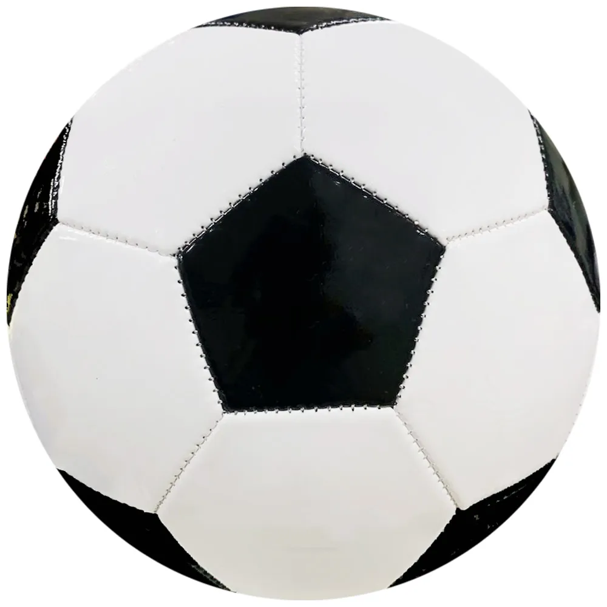

Oque é carreira no futebol.
Por: Rodrigo Henriques
A carreira no futebol é a trajetória profissional de um atleta no esporte, que vai da formação na base à profissionalização, passando pelo auge (entre os 22 e 29 anos) até o encerramento precoce, geralmente antes dos 40 anos devido ao desgaste físico. Por ser uma profissão curta, exige forte planejamento financeiro e abre portas para os bastidores, onde profissionais atuam como treinadores, gestores, médicos ou empresários.